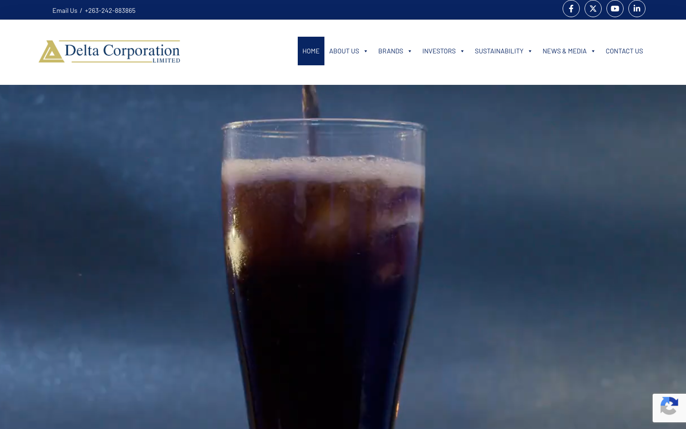

Overview
| Domain | delta.co.zw |
|---|---|
| Category | business |
| Sector tags | agriculture finance |
| Theme | delta-zimbabwe |
| Tranco rank | 559371 |
| WP detection score | 100 / 100 |
| WP version | 6.9.4 |
| CDN | — |
| IP | 162.0.226.180 |
| Homepage size | 370 KB |
| Verified at | 2026-05-01T11:29:07.599118+00:00 |
Hosting fingerprint
| Host panel | cpanel |
|---|---|
| Server header | nginx |
| TLS cert issuer | — |
| Reverse PTR | nc-ph-2675.devafrica.ai |
Evidence: path:/cgi-sys/defaultwebpage.cgi->cpanelpath:/cpanel->cpanel
Plugins detected (12)
WordPress signals
| Signal | Weight |
|---|---|
| meta_generator_wp | +30 |
| wp_json_valid | +25 |
| link_header_wp_api | +20 |
| wp_content_path | +15 |
| wp_includes_path | +15 |
| rss_wp_generator | +10 |
| readme_html_wp | +8 |
| plugin_path | +5 |
| theme_path | +5 |
| wp_body_class | +5 |
Discovery sources
| Source | Hint |
|---|---|
| tranco | rank=559371 |